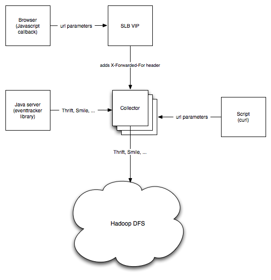

At a high level, the Event Collector Core is a service intended to receive events and persist them to HDFS (Hadoop DFS). It provides additional services such as data validation as well as bucketing. The Event Collector is a core component to build event pipelines for data services.
An event is a piece of information that occurred at a certain point in time. It may come from a user's browser, from another Java program, from a script that processes log files, ... For an in-depth dive into the event concept, see the Serialization library which implements the concept.
As you can see in the image below, there are multiple ways to send events to the Collector: plain HTTP (GET or POST) or Thrift. Note that the Collector exposes a Thrift RPC endpoint. This endpoint can accept different serialization protocols, including, but not limited to, Thrift.
The diagram shows two HTTP clients, the first one using curl from a script, the second one using JavaScript embedded in an html page that sends an event to the core at page-render time (a load balancer can be transparently be inserted in the flow, as shown). Another client is using the eventtracker library from a Java server, which is a convenience library to send events to the Collector.
Multiple serialization protocols are supported to write events to HDFS (Thrift, Smile).
The code has been running since early 2009 in production at Ning.
All dependencies are synced to Maven Central. If you have Maven installed, you simply need to do:
mvn assembly:assembly
You can then run the Event Collector:
java -Dcollector.activemq.enabled=false -jar metrics.collector-*-jar-with-dependencies.jar
You can test the Thrift endpoint by using the test_collector_thrift_endpoint.py script:
python src/test/py/test_collector_thrift_endpoint.py
After a while, you should see events showing up in /tmp/collector/hdfs:
collector $ find /tmp/collector/hdfs/hello -type f
/tmp/collector/hdfs/hello/2010/07/29/12/.2010-07-29T12.38.28.309-07.00-127.0.0.1-8080.crc
/tmp/collector/hdfs/hello/2010/07/29/12/2010-07-29T12.38.28.309-07.00-127.0.0.1-8080
collector $ hexdump -C /tmp/collector/hdfs/hello/2010/07/29/12/2010-07-29T12.38.28.309-07.00-127.0.0.1-8080
00000000 53 45 51 06 27 63 6f 6d 2e 6e 69 6e 67 2e 73 65 |SEQ.'com.ning.se|
00000010 72 69 61 6c 69 7a 61 74 69 6f 6e 2e 54 42 6f 6f |rialization.TBoo|
00000020 6c 65 61 6e 57 72 69 74 61 62 6c 65 25 63 6f 6d |leanWritable%com|
00000030 2e 6e 69 6e 67 2e 73 65 72 69 61 6c 69 7a 61 74 |.ning.serializat|
00000040 69 6f 6e 2e 54 68 72 69 66 74 45 6e 76 65 6c 6f |ion.ThriftEnvelo|
00000050 70 65 01 01 2a 6f 72 67 2e 61 70 61 63 68 65 2e |pe..*org.apache.|
00000060 68 61 64 6f 6f 70 2e 69 6f 2e 63 6f 6d 70 72 65 |hadoop.io.compre|
00000070 73 73 2e 44 65 66 61 75 6c 74 43 6f 64 65 63 00 |ss.DefaultCodec.|
00000080 00 00 00 ee 0a f7 f7 38 37 c3 a6 76 b0 1f d3 78 |...?.??87?v?.?x|
00000090 99 a3 45 ff ff ff ff ee 0a f7 f7 38 37 c3 a6 76 |.?E?????.??87?v|
000000a0 b0 1f d3 78 99 a3 45 14 0b 78 9c 63 65 c5 04 00 |?.?x.?E..x.ce?..|
000000b0 04 2e 00 65 10 78 9c 63 62 60 64 64 60 a2 2d 01 |...e.x.cb`dd`?-.|
000000c0 00 10 68 00 51 0b 78 9c 53 54 c4 04 00 1b 26 02 |..h.Q.x.ST?...&.|
000000d0 95 28 78 9c e3 66 00 01 d6 8c d4 9c 9c 7c 6e 06 |.(x.?f..?.?..|n.|
000000e0 46 20 9b 17 42 b1 96 e7 17 e5 a4 30 30 70 8f 2a |F ..B?.?.?00p.*|
000000f0 18 55 40 5f 05 00 63 ca 59 39 |.U@_..c?Y9|
000000fa
You can test the HTTP endpoint using curl (events will end up in /tmp/collector/hdfs as well):
collector $ curl -v http://127.0.0.1:8080/1?v=Hello,sWorld
* About to connect() to 127.0.0.1 port 8080 (#0)
* Trying 127.0.0.1... connected
* Connected to 127.0.0.1 (127.0.0.1) port 8080 (#0)
GET /1?v=Hello,sWorld HTTP/1.1
User-Agent: curl/7.19.6 (i386-apple-darwin9.8.0) libcurl/7.19.6 zlib/1.2.3
Host: 127.0.0.1:8080
Accept: */*
HTTP/1.1 202 Accepted
Cache-Control: private, no-cache, no-transform, proxy-revalidate
Content-Length: 0
Server: Jetty(6.1.x)
* Connection #0 to host 127.0.0.1 left intact
* Closing connection #0